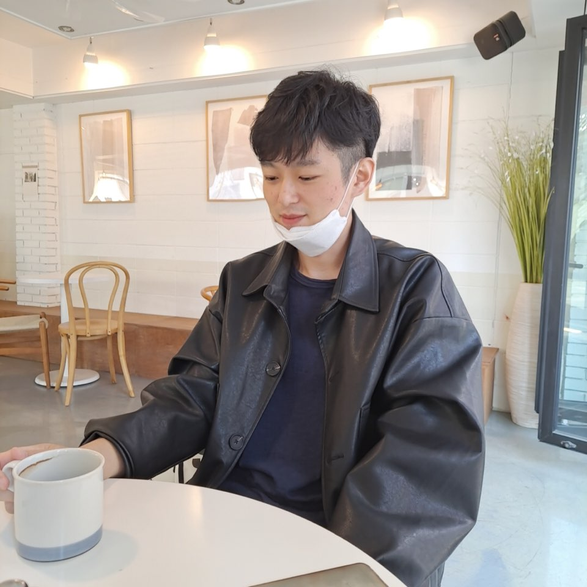

학생들이 미술품 공유 플랫폼을 통해 자신이 가진 미술적 재능을 찾고 재밌게 살아갔으면 좋겠습니다.
카테고리는 '초', '중', '고'라는 세 가지로 분류됩니다. 아이들은 나이에 맞는 카테고리에 미술 관련 사진이나 동영상을 자유롭게 올릴 수 있습니다. 원할 경우 전문가의 평가 혹은 아이들 간의 상호평가를 댓글로 받아볼 수도 있습니다.
사용방법은 다음과 같습니다.
1. 웹이나 앱 계정을 등록하고 자신만의 갤러리를 만듭니다.
2. 스마트폰으로 자신이 만든 미술품의 사진이나 동영상을 촬영합니다.
3. 갤러리에 업로드하고 피드백을 받을지 여부를 선택합니다.
4. 타 갤러리의 작품에 '좋아요'' 표시를 할 수 있습니다. '좋아요' 갯수는 공개되지 않으며, 우수작품 선발에만 사용됩니다.
대 표 : 이 정 민
